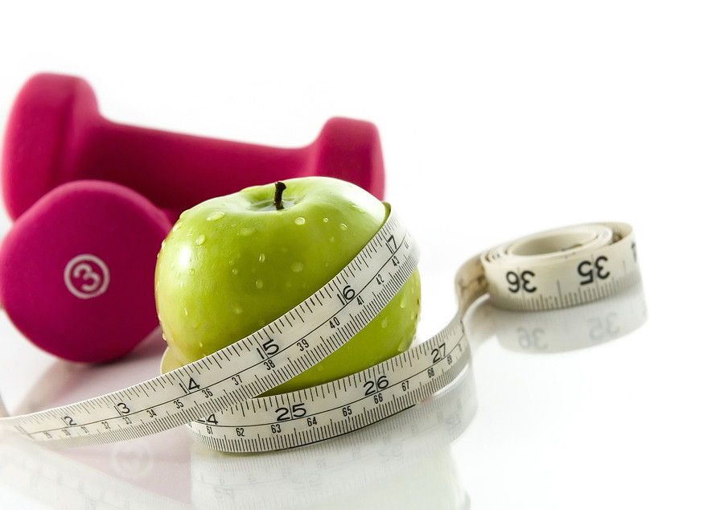
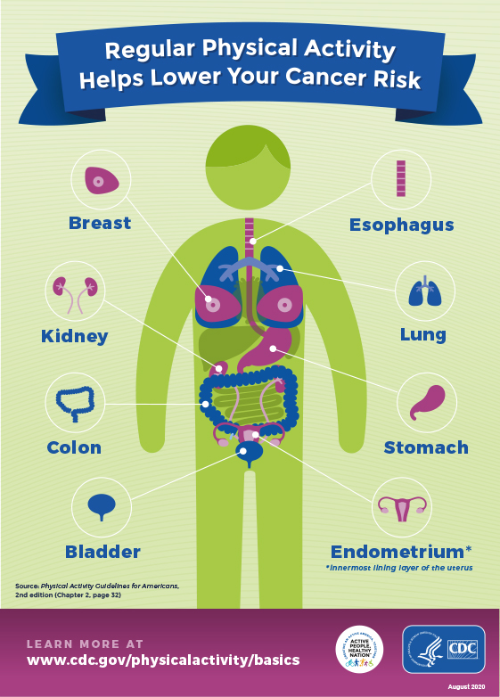

Did you know exercise not only can make you phyiscally healthier, but actually make you feel happier?
The Benefits of Regular Exercise
Regular physical activity is one of the most important things you can do for your health. Some of the major benefits are the following:
-
- Weight Management
- physical activity play a critical role in maintaining a healthy body weight, losing excess body weight, or maintaining successful weight loss.
- 
-
- Reduce Your Health Risk
- Regular hysical activity can prevent heart disease and stroke. It can also lower the risk for developing several commonly occuring cancers.
- 
-
- Strengthen Your Bones and Muscles
- - Doing aerobic, muscle-strengthening, and bone-strengthening physical activity at a moderately-intense level can slow the loss of bone density that comes with age.
- - It can also helps with arthritis and other rheumatic conditions affecting the joints.
Other than the benefits to your body biologically, there are also tremendous amount of benefits to our mental health.
The mental benefits are:
- imporve your mood and decrease feelings of depression and stress 1
- Increase the production of endorphins, which are known to help promote positive feelings and reduce the perception of pain 2
- Help your brain health and promote chances in brain structure that's vital for memory and leanrning. 3
- Many researches conclude that regular exercise can help you relax and sleep better 4
SummaryExercise can help to improve your physical and mental health. You should aim for 75 to 300 minutes of exercise depending on the type of activity. Don't know where to start? Come join us here